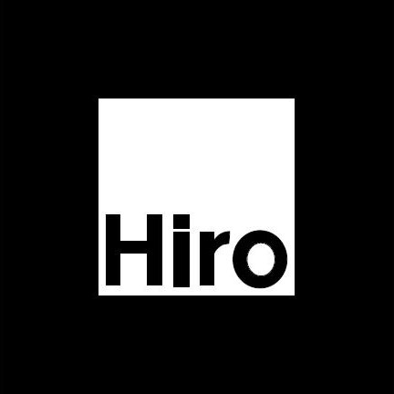

Дана система призначена для покращення сприйняття інформації учнями. Завдяки відображенню 3d-контенту інформація буде більш цікавою та зрозумілою, що в свою чергу підвищує рівень навчання.
Нижче представлені категорії - "Геометрія", "Астрономія", "Хімія" - оберіть одну з них та пориньте у світ нових технологій!
Маркер, необхідний для додатку
Для використання даної системи необхідний цей маркер. Потрібно заздалегідь роздрукувати його, або завантажити на інший пристрій.

Переваги нашої системи:
- Використання таких програм підвищує рівень навчання шляхом зацікавлення при перегляді необхідної інформації у додатку.
- Для відтворення елементів доповненої реальності користувачу не потрібно завантажувати, встановлювати та налаштовувати на власному пристрої додаткового ПЗ.
- Це збільшує кількість потенційних користувачів такої системи.